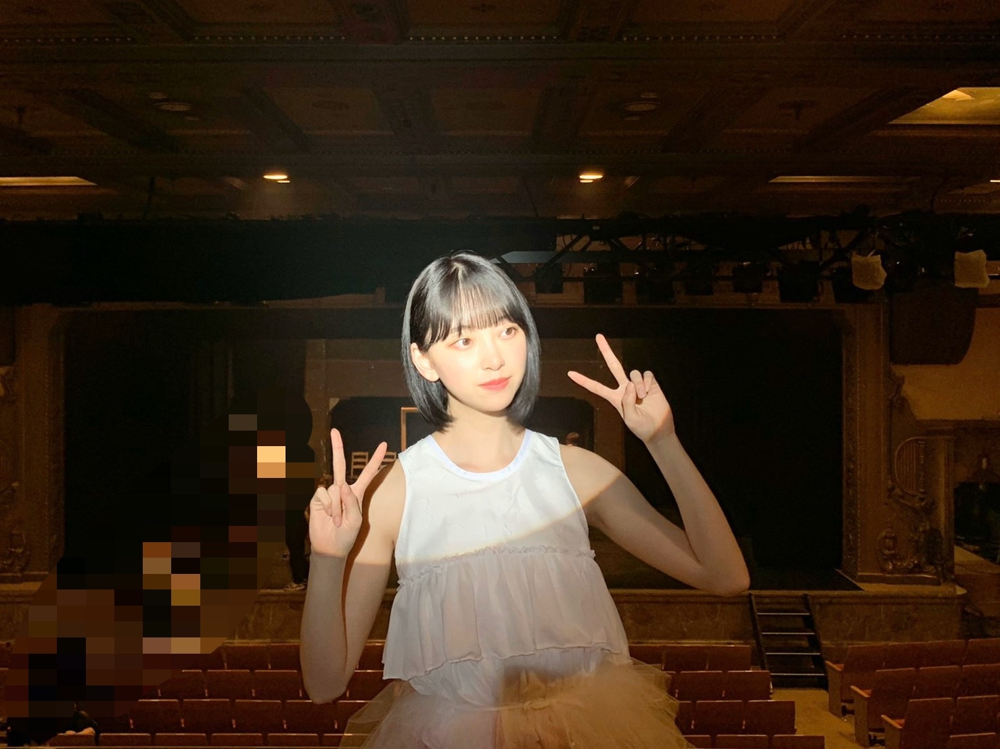

2020/0908Tueゆっくりと咲く花
いよいよ
ALL MV COLLECTION 2～あの時の彼女たち～
が明日発売になりますね^ - ^
フラゲした方もいますか？
メイキングはもちろん、今回のMV集のために
撮影された2期生曲 " ゆっくりと咲く花 "
のMVを早くみなさんに見ていただきたいです


1カットでミュージカルぽく撮影しました！
楽しかったなぁ
振り付けも歌詞も音も衣装も
繊細さと芯の強さが現れていて
2期生らしいなぁと思いました


たくさんの想いが詰まったMVです
他のMVももちろん思い入れしかないです
わたしも早くお家で観たいなぁ
感想お聞かせください^ - ^
ではでは
2020/09/08 20:00
コメント(260)
本当に楽しみですMV集。
ゆっくりと咲く花、配信では観てましたが、MVは今回初ですね！
Route 246もフルver.は今回初ですし、見所満載ですね♪☆
Route 246もフルver.は今回初ですし、見所満載ですね♪☆
今日もブログ更新ありがとう〜♡
未央奈やっぱり白が似合う(･･;)！
未央奈やっぱり白が似合う(･･;)！
入手できたらすぐに見ようと思います！
予約したので明日届くのが楽しみです！
早く見たいけどテストがあるので終わってからみようと思います
なるべく早くコロナが収束して未央奈さんに会いたいです！
早く見たいけどテストがあるので終わってからみようと思います
なるべく早くコロナが収束して未央奈さんに会いたいです！
ゆっくりと咲く花のMVフラゲして見させていただきました！
2期生の綺麗な歌声と鮮やかな映像、みんな揃っていて綺麗なダンスを通じて2期生の生い立ちを感じることができて思わず涙してしまいました。
未央奈さんを推していて、2期生を推していてよかったと思いました。
コロナが落ち着いたら今度こそ2期生ライブができるといいですね！開催されたら絶対に行きたいです！
まだ油断できない日々が続きますが、お体に気をつけて頑張って下さい。ずっと応援しています！
2期生の綺麗な歌声と鮮やかな映像、みんな揃っていて綺麗なダンスを通じて2期生の生い立ちを感じることができて思わず涙してしまいました。
未央奈さんを推していて、2期生を推していてよかったと思いました。
コロナが落ち着いたら今度こそ2期生ライブができるといいですね！開催されたら絶対に行きたいです！
まだ油断できない日々が続きますが、お体に気をつけて頑張って下さい。ずっと応援しています！
未央奈ちゃんこんばんは‼ありがとうございます‼楽しみにしてます頑張ります‼気をつけて下さい！ありがとうございます！頑張ります‼今日から頑張ります‼
初コメです！
今日届いたので一番最初に見ました！すっごくよかったです。心が暖かくなるような、素敵なMVでした。
私はファン歴まだ半年くらいなので、二期生ライブは見れていないのが残念ですが、こうしてMVが見れることを嬉しく思います。いつかライブで披露されるのを楽しみにしています！☺️
今日届いたので一番最初に見ました！すっごくよかったです。心が暖かくなるような、素敵なMVでした。
私はファン歴まだ半年くらいなので、二期生ライブは見れていないのが残念ですが、こうしてMVが見れることを嬉しく思います。いつかライブで披露されるのを楽しみにしています！☺️
ブログ更新ありがとう〜〜
未央奈かわいい！
未央奈かわいい！
衣装可愛い
ミュージカル感も歌詞とあっててとても感動するMVでした
他のMVもぼちぼち観て行きます！
ミュージカル感も歌詞とあっててとても感動するMVでした
他のMVもぼちぼち観て行きます！
予約したよ
届くの楽しみやー
届くの楽しみやー
『ゆっくりと咲く花』のMV見させて頂きました！！
曲調と映像から不意に涙が頬を流れ落ちました。
心底感動した素晴らしい作品でした。。
これからも乃木坂の皆さんを見て勉強や部活など頑張らさせて頂きます！！堀ちゃん大好きです！！❤
曲調と映像から不意に涙が頬を流れ落ちました。
心底感動した素晴らしい作品でした。。
これからも乃木坂の皆さんを見て勉強や部活など頑張らさせて頂きます！！堀ちゃん大好きです！！❤
ブログ更新ありがと〜
今日も、かわいい♡
今日も、かわいい♡
ゆっくりと咲く花のMV観ました
まるでミュージカル映画のフィナーレを観てるような壮大なMVでした 終始ゾクゾクして、目頭も熱くなりまくりました
ワンカット撮影でその壮大さがより一層大きなものになっていると思いました。
そして何より2期生8人の歌声が素敵過ぎる！！♪
素敵な作品を見させてもらいました、ありがとう。
まるでミュージカル映画のフィナーレを観てるような壮大なMVでした 終始ゾクゾクして、目頭も熱くなりまくりました
ワンカット撮影でその壮大さがより一層大きなものになっていると思いました。
そして何より2期生8人の歌声が素敵過ぎる！！♪
素敵な作品を見させてもらいました、ありがとう。
未央様今日もお綺麗です！！
MVの撮影の感想絶対送ってやるからな！見てろよ未央奈！
絶対！絶対送るから！
けど、今実習中だから少し遅くなるです。
PS. 数年振りの給食は美味しいです。
MVの撮影の感想絶対送ってやるからな！見てろよ未央奈！
絶対！絶対送るから！
けど、今実習中だから少し遅くなるです。
PS. 数年振りの給食は美味しいです。
堀ちゃん、ブログ更新ありがとう〜
MV集、予約したよー
堀ちゃん推し、2期生推しなので
楽しみだよー
堀ちゃん、大好きだよー
MV集、予約したよー
堀ちゃん推し、2期生推しなので
楽しみだよー
堀ちゃん、大好きだよー
クーラーがんがんにきかせた部屋で見るの楽しみです〜
未央奈〜！！
ブログ更新ありがとう
明日発売だね！
明日中にかいに行く計画だよ〜
ゆっくりと咲く花めっちゃ楽しみ
見たら感想書くからまってて。
次の更新も待ってるね〜
ブログ更新ありがとう
明日発売だね！
明日中にかいに行く計画だよ〜
ゆっくりと咲く花めっちゃ楽しみ
見たら感想書くからまってて。
次の更新も待ってるね〜
予約済みですよ～。
たのしみですね～。
こんな時期だからこそエンタメが必要だし
前を向いて歩こうって気にさせてくれます
楽しいことたくさん見つけて、
明日も頑張ろうね～。
たのしみですね～。
こんな時期だからこそエンタメが必要だし
前を向いて歩こうって気にさせてくれます
楽しいことたくさん見つけて、
明日も頑張ろうね～。
未央奈ちゃんブログ更新ありがとう！！！！
MVコレクション〜…欲しいよぉ( ˘･з･)
お小遣いで買おうとしたら…お金なかった( ˙-˙ )
次のお年玉で絶対買って自分がまだ知らないMVを見まくりたいと思います泣
2期生の曲も他の曲もめっちゃ楽しみです！自分は乃木ヲタになってまだ2年で乃木坂で知らない事が沢山あり過ぎるから、MV集見たりして乃木坂をもっと勉強したいです！
それじゃあまたブログ更新した時に！
(*￣▽￣)ﾉ~~ ﾏﾀﾈｰ♪
MVコレクション〜…欲しいよぉ( ˘･з･)
お小遣いで買おうとしたら…お金なかった( ˙-˙ )
次のお年玉で絶対買って自分がまだ知らないMVを見まくりたいと思います泣
2期生の曲も他の曲もめっちゃ楽しみです！自分は乃木ヲタになってまだ2年で乃木坂で知らない事が沢山あり過ぎるから、MV集見たりして乃木坂をもっと勉強したいです！
それじゃあまたブログ更新した時に！
(*￣▽￣)ﾉ~~ ﾏﾀﾈｰ♪
買ったよ！！
ブログ更新ありがと！
ゆっくりと咲く花が収録されるということなので買いますー！テスターですら泣いてしまったのにMVみたらどうなることやら。(笑)衣装も綺麗だし、どんなMVなのか楽しみです。
ゆっくりと咲く花が収録されるということなので買いますー！テスターですら泣いてしまったのにMVみたらどうなることやら。(笑)衣装も綺麗だし、どんなMVなのか楽しみです。
みおなちゃん更新ありがとう
今日も可愛いよー❤️
MV集絶対買うよー！
今日も可愛いよー❤️
MV集絶対買うよー！
ゆっくりー
フラゲは出来なかったぁ～
明日支払い予定なんですよ～
今はワクワクが止まらいですね（笑）
「ゆっくりと咲く花」楽しみですね。
全部全部楽しみになんですが「ゆっくりと咲く花」
一番に見る事にしますね。（笑）
ミュージカル仕立てかぁ～
最近のＭＶは１カット撮影が流行みたいですね。
一面のホワイトバックも流行化しているって、ＴＶ
で紹介されてました。
今回の衣装ってフリル多めでフリフリダンスなん
でしょうかねぇ～ 白い衣装、綺麗だね
では、おやすみおなぁ～
明日支払い予定なんですよ～
今はワクワクが止まらいですね（笑）
「ゆっくりと咲く花」楽しみですね。
全部全部楽しみになんですが「ゆっくりと咲く花」
一番に見る事にしますね。（笑）
ミュージカル仕立てかぁ～
最近のＭＶは１カット撮影が流行みたいですね。
一面のホワイトバックも流行化しているって、ＴＶ
で紹介されてました。
今回の衣装ってフリル多めでフリフリダンスなん
でしょうかねぇ～ 白い衣装、綺麗だね
では、おやすみおなぁ～
ゆっくりと咲く花、見ました！
言えることはだた1つ。泣きました。曲もストーリーも良すぎです。
寂しかったのは、こっちゃんが居ないという事実。曲を発表した時は居たのになぁって…
その他、収録曲全てが素晴らしかったです。
また明日も見ます！
言えることはだた1つ。泣きました。曲もストーリーも良すぎです。
寂しかったのは、こっちゃんが居ないという事実。曲を発表した時は居たのになぁって…
その他、収録曲全てが素晴らしかったです。
また明日も見ます！
堀未央奈❤こんばんは☺メールで誕生日祝ってくれて嬉しかったよ＼(^_^)／
ありがとうね(^-^)vこれからもずっと宜しくね(*^^*)
今日、長野県の上田のTSUTAYAにDVD来たから今日買って来たよ(^-^)v
後で見るからね(^o^)
今日も可愛いね(*^^*)愛してる❤
これからも体調に気を付けて頑張ってね(^_^)v応援しているからね(*^^*)
ありがとうね(^-^)vこれからもずっと宜しくね(*^^*)
今日、長野県の上田のTSUTAYAにDVD来たから今日買って来たよ(^-^)v
後で見るからね(^o^)
今日も可愛いね(*^^*)愛してる❤
これからも体調に気を付けて頑張ってね(^_^)v応援しているからね(*^^*)
更新ありがと！
ゆっくりと咲く花はまじで神曲だね！楽しみ！
1番可愛い！
ゆっくりと咲く花はまじで神曲だね！楽しみ！
1番可愛い！
買います！！ゆっくりと咲く花楽しみです！！
ブログありがとう！
ゆっくりと咲く花のMVみたよー
少しネガティブ感もあるけど、それ以上に背中をおしてくれる温かい歌詞やと思ったなあ。
映像も1カット撮影を忘れるくらいキレイやったし最後1列になるところも良かった(^^)
ゆっくりと咲く花のMVみたよー
少しネガティブ感もあるけど、それ以上に背中をおしてくれる温かい歌詞やと思ったなあ。
映像も1カット撮影を忘れるくらいキレイやったし最後1列になるところも良かった(^^)
ゆっくりと咲く花早くみたいです！！
連日のブログ更新ありがとうございますm(_ _)m
MV集楽しみです！
ゆっくりと咲く花観るぞぉー
MV集楽しみです！
ゆっくりと咲く花観るぞぉー
ゆっくりと咲く花鬼リピート します
こんばんは。
MV集フラゲしました!
まだ見てないです。
MV集フラゲしました!
まだ見てないです。
「ゆっくりと咲く花」の最後のみんなでくっ付いてるの観れて嬉しかったよ。ほんとはなんでもない事なんですけどね。
ｍｖってｃｄ買ったら一回観てそのあとめんどくさくなってそうそう観なくなるからこのｂｄのお陰で見やすくなるから頻繁に見れそうです。ライブとは違った世界観が感じられるから好きなんです。
ｍｖってｃｄ買ったら一回観てそのあとめんどくさくなってそうそう観なくなるからこのｂｄのお陰で見やすくなるから頻繁に見れそうです。ライブとは違った世界観が感じられるから好きなんです。
堀ちゃんブログ更新ありがとう！
明日のMV集とても、発売が楽しみです。
幻の2期生ライブで、歌われた「ゆっくりと咲く花」の映像化とても嬉しいです！
感想伝えますね！
堀ちゃんにずっきゅーん！
明日のMV集とても、発売が楽しみです。
幻の2期生ライブで、歌われた「ゆっくりと咲く花」の映像化とても嬉しいです！
感想伝えますね！
堀ちゃんにずっきゅーん！
MV集フラゲしました
これから見させてもらいます
楽しみです
ゆっくりと咲く花のMVすごく期待しています
また感想も書きたいと思います
これから見させてもらいます
楽しみです
ゆっくりと咲く花のMVすごく期待しています
また感想も書きたいと思います
ブログ更新ありがとうございます。
MVコレクション楽しみにしてました！ついに発売ですね。
ゆっくりと咲く花のMVは入念にチェックしたいと思います。
写真ありがとうございます。
MVコレクション楽しみにしてました！ついに発売ですね。
ゆっくりと咲く花のMVは入念にチェックしたいと思います。
写真ありがとうございます。
フラゲしました！！！
でもまだ15枚目のところです
ティザーPVでもう感動
はやくみたいなーー！！！
でもまだ15枚目のところです
ティザーPVでもう感動
はやくみたいなーー！！！
みおなブログ更新ありがと！
みおなにそんなこと言われたら買うしかないじゃん〜
しょーがない、買うか
高2にはきつい金額だが！ゆっくりと咲く花聞きたいよ〜
あれすごい感動するからね笑
神曲間違いない！
みおなにそんなこと言われたら買うしかないじゃん〜
しょーがない、買うか
高2にはきつい金額だが！ゆっくりと咲く花聞きたいよ〜
あれすごい感動するからね笑
神曲間違いない！
やっぱり2期生は最高だよね。
みんな辛い経験をして、強い。
いつまでも応援していたくなります。
帰ったらMV集見るねー！！
みんな辛い経験をして、強い。
いつまでも応援していたくなります。
帰ったらMV集見るねー！！
早く見たくてうずうず
ブログ更新ありがとう。
フラゲしました！
ゆっくりと咲く花のMV、感動しました。
泣きました。
素晴らしい作品、ありがとうございます！
フラゲしました！
ゆっくりと咲く花のMV、感動しました。
泣きました。
素晴らしい作品、ありがとうございます！
更新ありがとう
フラゲしてきたー
また時間があるときに見るね
フラゲしてきたー
また時間があるときに見るね
みおなしゅき！
未央奈ちゃん、ブログ更新あいがとう(*'ω'*)
ゆっくりと咲く花のMV見たよ。
冒頭の未央奈ちゃんの涙を流すシーン見て
泣いてしまいました。
2期生の思いが詰まった歌本当に大好きです(*'ω'*)
これからも未央奈ちゃん、２期生メンバーを応援していくからね(^^)/
体調に気を付けて頑張ってね！
ゆっくりと咲く花のMV見たよ。
冒頭の未央奈ちゃんの涙を流すシーン見て
泣いてしまいました。
2期生の思いが詰まった歌本当に大好きです(*'ω'*)
これからも未央奈ちゃん、２期生メンバーを応援していくからね(^^)/
体調に気を付けて頑張ってね！
ブログ更新Thank You
天使の可愛い子ちゃんﾟ+.ﾟ(´▽`人)ﾟ+.ﾟ
天使の可愛い子ちゃんﾟ+.ﾟ(´▽`人)ﾟ+.ﾟ
届いた！
めっちゃ良かった！
めっちゃ良かった！
未央奈ちゃん大好きです( ु ›ω‹ ) ु♡
ゆっくりと咲く花は名曲✧︎
大好き♡
ではまた！
未央奈ちゃん大好きです( ु ›ω‹ ) ु♡
ゆっくりと咲く花は名曲✧︎
大好き♡
ではまた！
未央奈ちゃん大好きです( ु ›ω‹ ) ु♡


仕事の都合がつかなくてさ～、木曜日にパネル展示されてるお店で買うよ～。
2期生に、ガッツリはまりこむ週末にするよ。
ではでは
ひでき